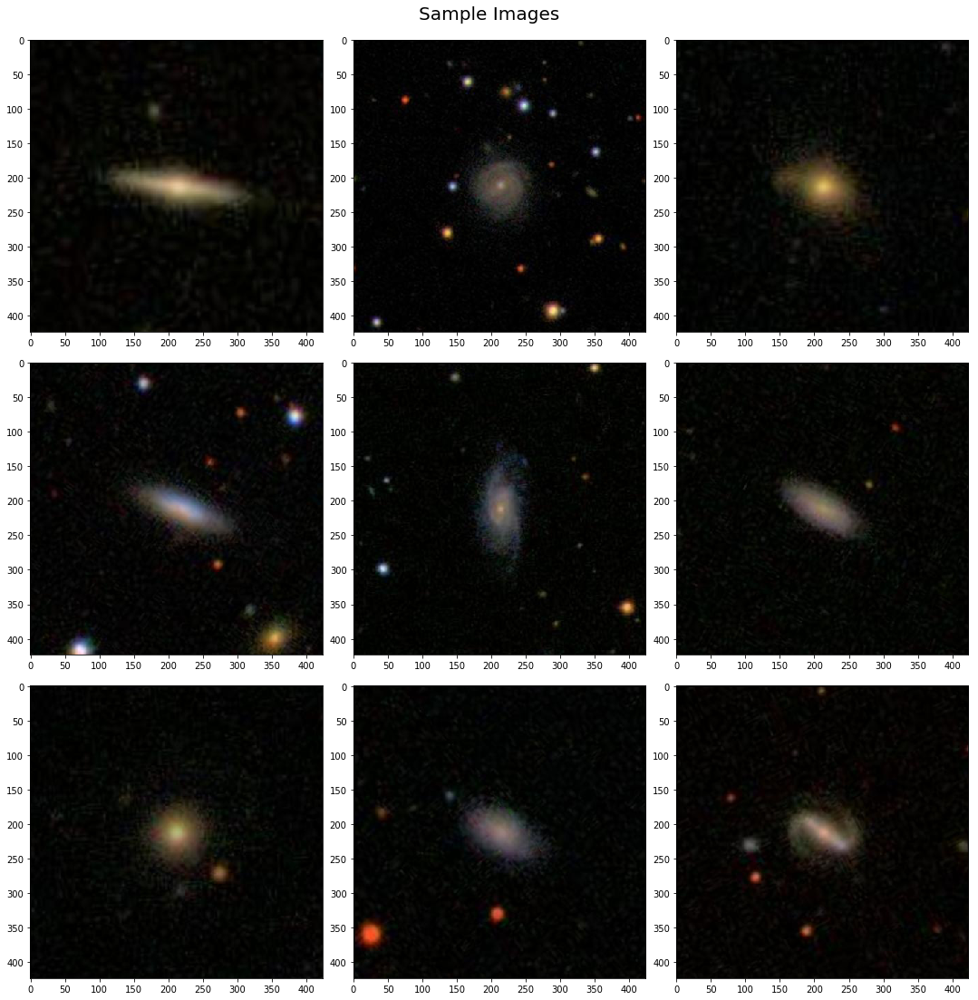
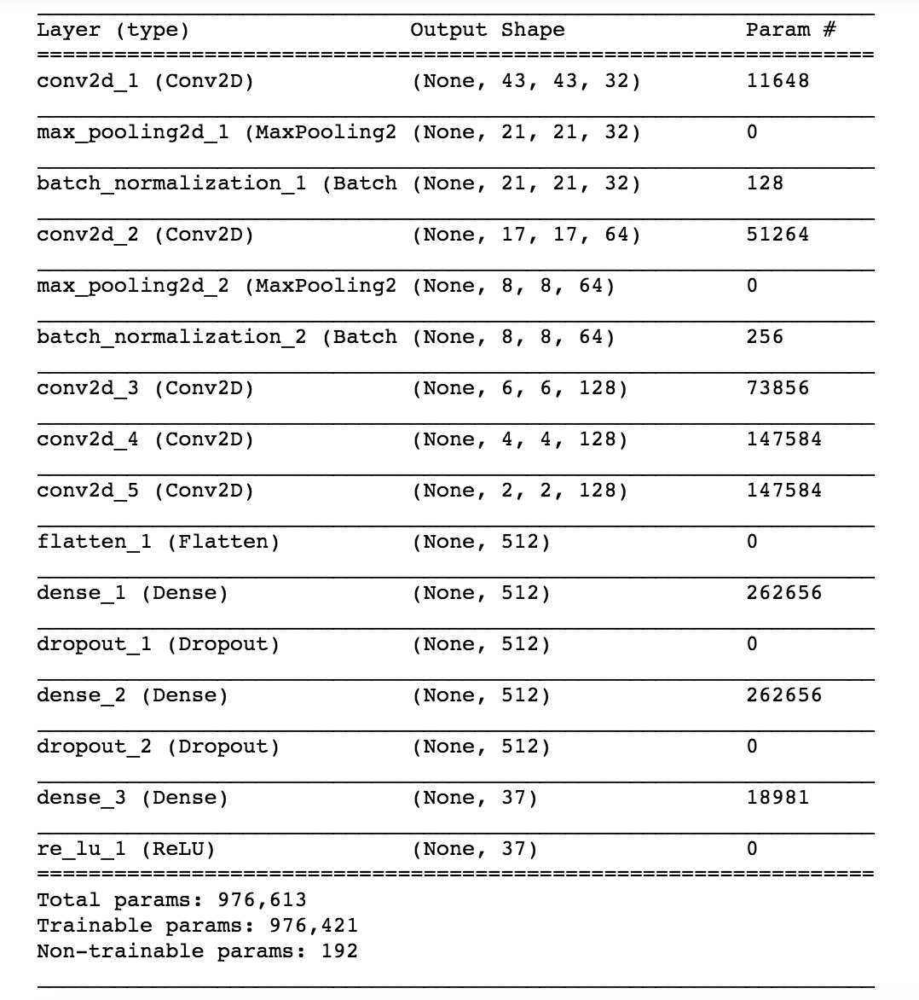

Project Summary:
This project looked at methods for identifying specific galaxy morphologies using crowd sourced survey responses. The final solution is a custom built convolutional neural network made specifically for low computation allowing training to be feasible on a conventional laptop. The motivation for this project is to provide a labelling system that is more scalable to larger datasets. Although crowdsourcing is effective for providing labelled data sets in the thousands this model scales easily to provide labels to millions of images. The final model can be used to see performance on the dataset it was trained on as well as on any user uploaded photo.
The Dataset:
The dataset consisted of roughly 60 000 424x424 RGB galaxy images a sample of which is shown below:
For each of these images the responses to a list of 37 survey questions is provided as a fraction of total participants that selected that response. The final model was trained to predict each of these responses however for clarity sake only predictions for the first three survey questions are included in the demo.
The Solution:
The major constraint of this project was that training was to be done on a laptop. The final model is a convolutional neural network with roughly 1 million parameters. To reduce computational load during training the model utilizes aggressive downsampling on the first three convolutional layers. The full architecture as described by keras is shown below:
Because the labels were given as values between 0 and 1 the task was more similar to a regression problem than a classification problem. Therefore a RMSE was chosen to be the most suitible loss function. This distinction is important as the model is not made to determine specific morphologies, but rather to simulate would be survey responses. These values can then be used as confidence intervals for possible labeling.